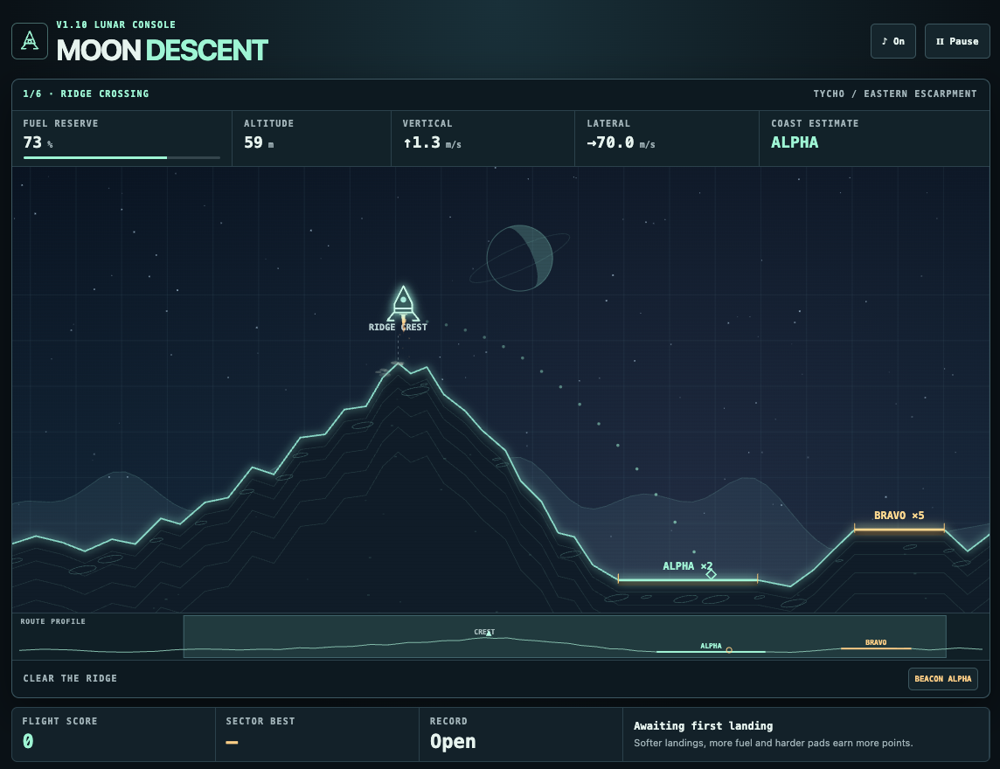
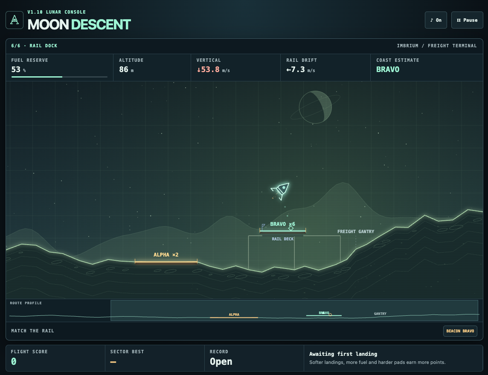
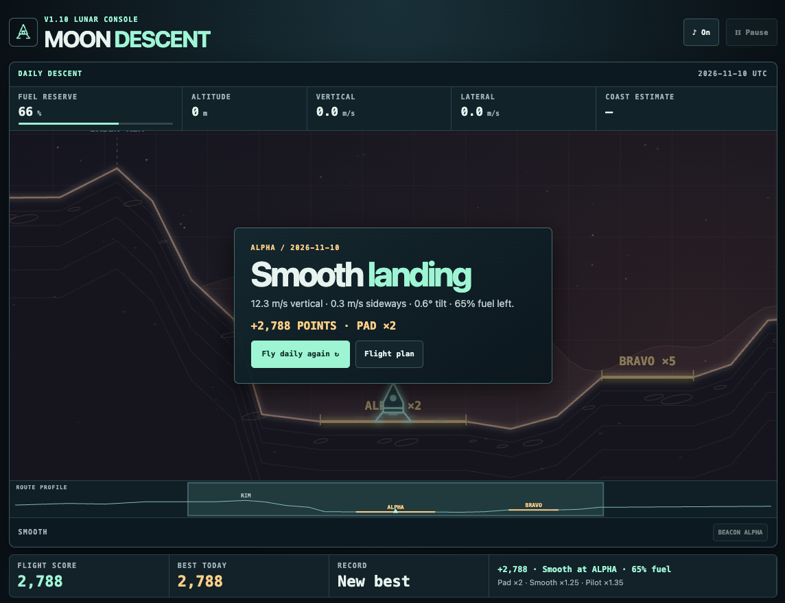
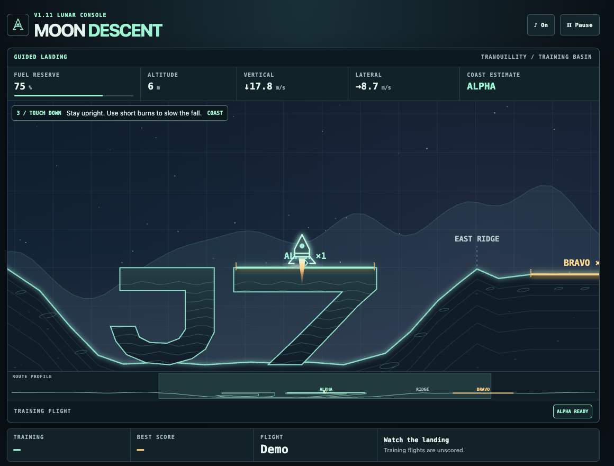

01 / Campaign
Six lunar sectors
Cross a ridge, reach a stranded crew, descend into a crater and land on a moving deck. Better landings and more fuel earn points. Each crash costs 500 points in a campaign run.
Clear the ridge. Save enough fuel to brake. Set your lander down on a shelf, or match a moving platform on the final approach.
Choose Watch demo for a guided landing · Keyboard and touch controls

01 / Campaign
Cross a ridge, reach a stranded crew, descend into a crater and land on a moving deck. Better landings and more fuel earn points. Each crash costs 500 points in a campaign run.
02 / Daily Descent
Take on the same route as other players on the same UTC date and difficulty. Retry to improve your approach. The scoreboard shows your last landing and your personal best.



On a touchscreen, hold the steering and thrust buttons together. To play offline, extract the ZIP and open index.html. Personal bests are stored in your browser when storage is available.